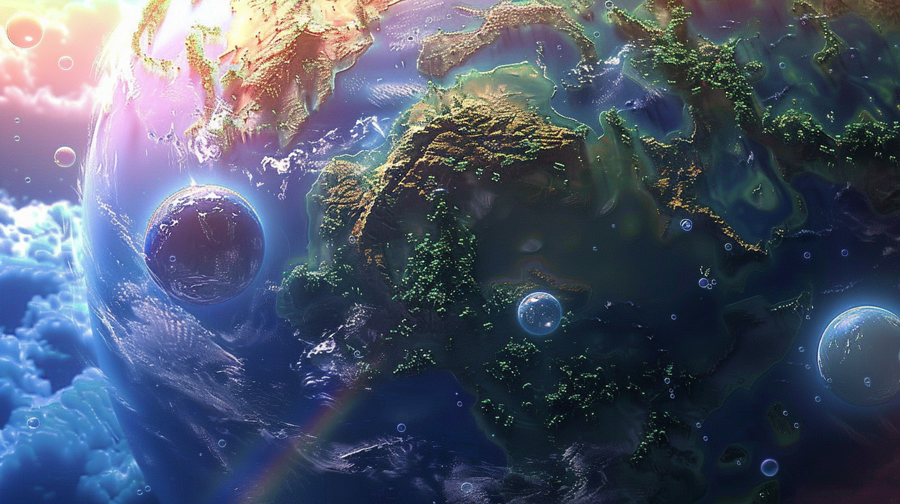
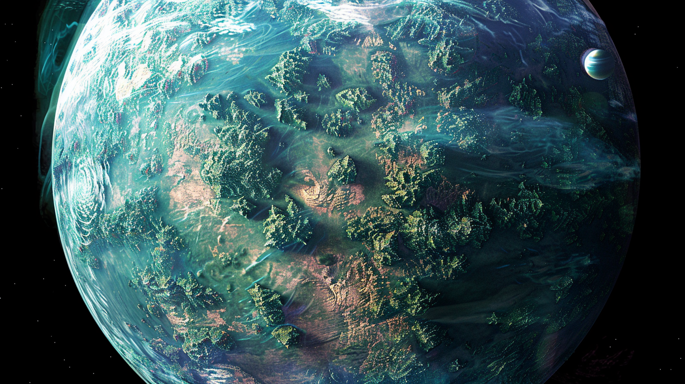
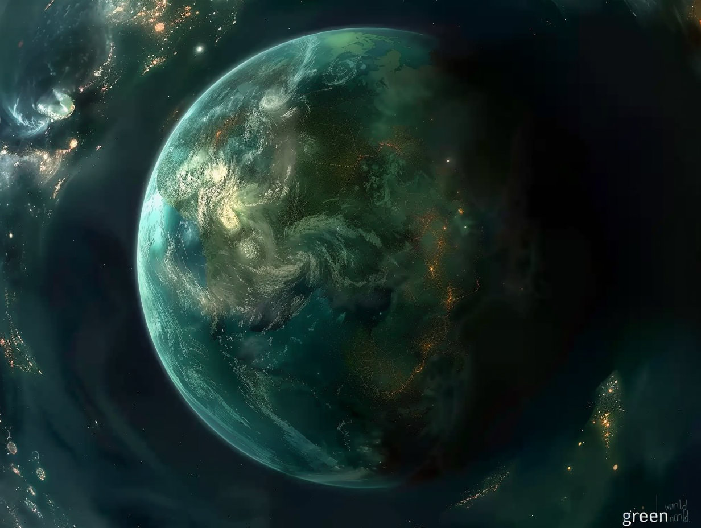
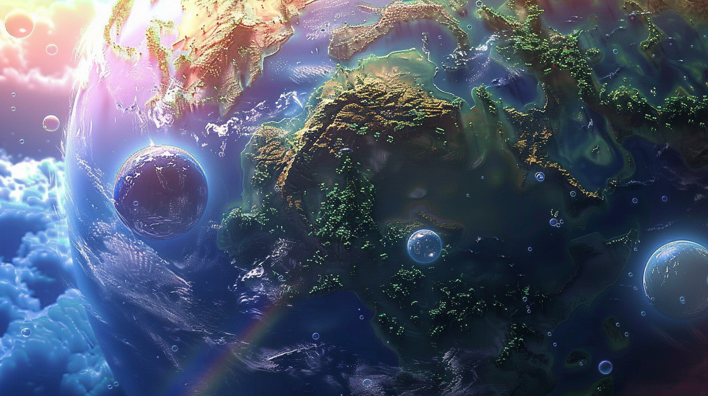
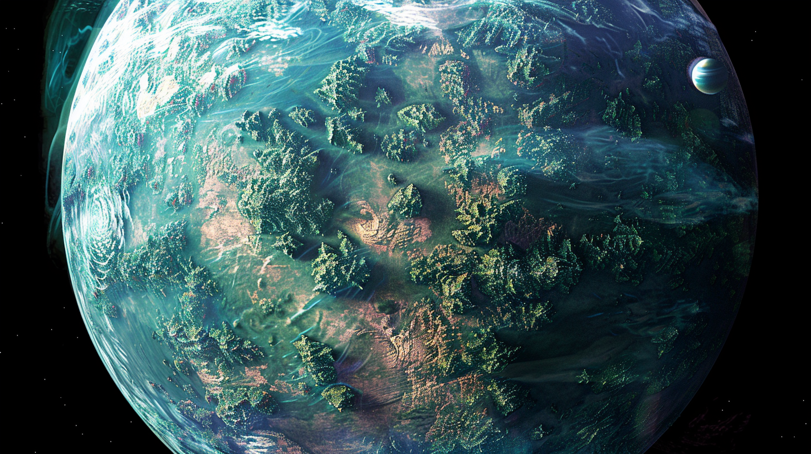
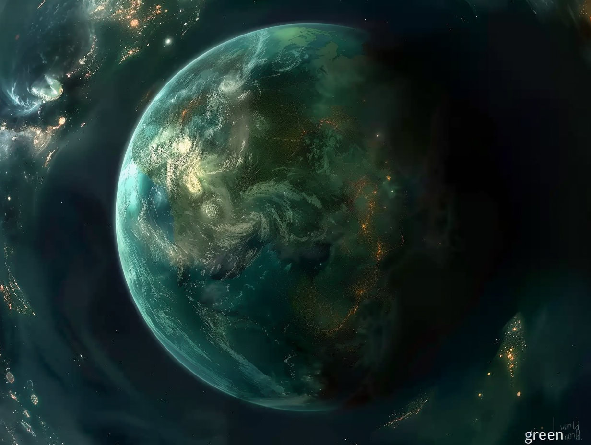

We recently embarked on an extraordinary educational adventure with a group of talented young students from Bangkok Patana School. Our workshop, designed to explore the realms of sustainability, engineering, and design, resulted in the creation of an imaginary planet called "Forestia". Over the course of this workshop, these five young visionaries not only demonstrated their creativity but also their commitment to environmental sustainability.
On the first day, the workshop focused on conceptualizing the ecosystem of Forestia. Utilizing the innovative AI tool Midjourney, the students brought their visions to life by generating stunning images of unique animals and diverse landscapes of their newly imagined planet. This session was not only a testament to their imagination but also their understanding of ecological balance and biodiversity.
The following day was all about bringing another aspect of their planet to life. The students used TinkerCAD and Luma AI to design and create 3D models of sustainable planter pots. This exercise was not just about design; it was a practical application of sustainable practices, teaching the young creators the importance of eco-friendly solutions in real-world scenarios.
The boys from Bangkok Patana School proved themselves to be incredibly smart and capable. Their ability to integrate technology with environmental consciousness was nothing short of inspiring. This project did not just teach them about technology; it empowered them with the knowledge that they have the power to make a difference in the world.
Wednesday. At the start of the lesson i didn’t know what to do so i just explored the app. The app was called midjurney you just have to explain the details of what you want in, and it might or might not be the one that was in your head. Then i used ChatGPT to tell me about the forestia world and really weird animals i can create in Midjurney, it was really fun and funny when the pictures came out. After that i started combining the world and my animal together and got a really cool picture: it was a lion with a flaming lightning wings and horns. (the lion was flying above a volcano. It was so fun putting all my pictures together.
Thursday. Today we designed a self watering pot for a plant. (3D printing). First the teacher explained what we were going to do: “today we are going to make a self watering pot for a plant. We will start with the outside details of the pot. Everybody will have to pic a 3D shape or picture. I already made the in side of the pot for you so you just have to add the outside”. I got a really cool picture of a shark! We used Midjurney and ChatGPT for the 3D picture. Everybody finished there pot at the end of the lesson. I can’t wait until i can get my self watering pot.
I think it was very helpful for me, I never knew something like chat GPT ever existed before this. I thought the 3D generator was cool too, though some of the shapes I generated were squished. I liked the workspace because we sort of had our own desk. (and may I note the bubble tea) I learned how to use the remix function in the mid journey app by adding other images and typing what you want to change (it was really fun) I also learned the vary region function and I thought it was very useful. Another thing I learned is that you can send a picture to chat GPT and it can describe it in extremely high detail. The DWP AI/3D printing workshop was very fun, I won’t hesitate to do it again!
I forgot to mention, I feel great full and lucky that I had the opportunity to come and learn
I loved the amazing AI lesson. The terrific team taught me how to use Midjourney as well as Genie, dwpChatbot, ChatGPT and TinkerCAD like a master. Incredibly, they also taught me how to use the ‘vary region’ function in Midjourney (even though it didn’t quite work for me). The automatic plant idea was absolutely amazing with the straw bringing water from the container to the plant pot automatically every day!!! Playing around with Genie was super fun, sometimes it looked good but other times it was completely hideous. I never knew how to import in TinkerCAD and the team taught me so I guess the saying ‘you learn something new every day’ is wrong because I learned about six things in one day!!! Overall, I loved the lessons, I even showed my little brother (Chael) the pictures I made with Midjourney. And of course, Chael loved mine!!! I liked the beloved boba, preeminent pizza and basically all the different types of comforting cuisines. Thank you for the loveliest Ai lesson EVER. (-:
I had so much fun at DWP workshop. Learning about AI generating pictures was really cool, especially seeing how AI can make art. The second day with 3D printing was awesome. watching the printer make things right in front of my eyes. The whole workshop was very informative, and I learned a lot. Thank you.